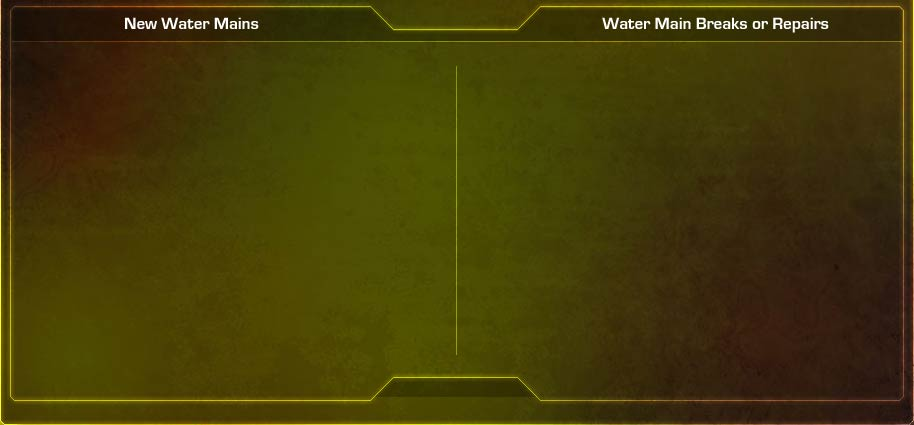

Potable Water / Disinfection of New Water Mains, Breaks, or Repairs
Page 3 of 9
BE Responsibilities
When new water mains are installed or a water main breaks and requires repair, you will work closely with CE to address disinfection requirements and procedures. BE responsibilities are shown below.

Conduct engineering reviews of scheduled repairs and modifications to assess and avert potential health hazards and to determine and conduct sampling, analysis, and monitoring (SAM) as necessary.
Support the cross-connection and backflow prevention program by classifying health threats of potential and actual drinking water cross-connections.
Isolate the distribution system so that contaminants may not enter other parts of the system.
Ensure proper flushing and disinfection of the affected distribution system.
Follow the base’s water contingency response plan.
Isolate the distribution system so contaminants that may enter at the location of the break do not spread to other parts of the system.
Review plans and drawings to assess and avert potential health hazards.
Ensure proper flushing and disinfection of the affected distribution system.
Run bacteriological sampling analysis.
If sampling indicates a potential public health threat or non-compliance with applicable regulations and standards, immediately implement public notification procedures.
Select the highlighted text to learn more, and then click Forward to continue.